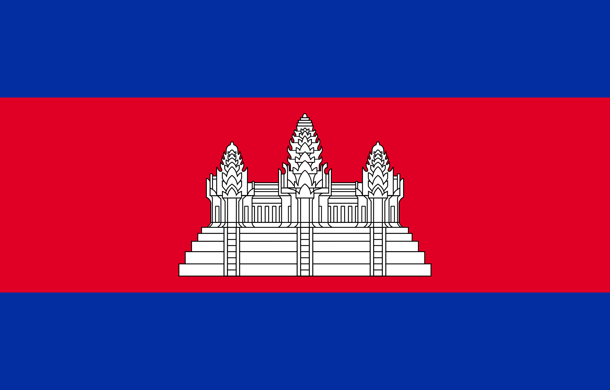
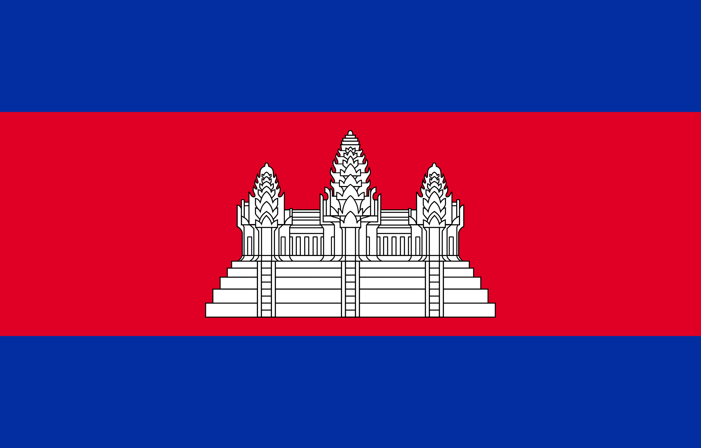

Gallery



Gwynne 92/24

Kerjasama bilateral di bidang politik digunakan untuk mempererat hubungan antarnegara. Digunakan pula sebagai jawaban untuk konflik-konflik negara-negara. Kedua negara tersebut (Indonesia & Kamboja) adalah anggota ASEAN, oleh sebab itu tentu mereka membantu sama lain dalam penyelesaian konflik-konflik dunia, pertukaran informasi satu sama lain, meningkatkan satu rasa solidaritas satu sama lain.
Contoh Lain: ASEAN (Association of Southeast Asian Nations) dan PBB (Perserikatan Bangsa-bangsa). Tak hanya di sekitar asia, Indonesia juga memiliki hubungan politik di Kanada, Panama, Chille, Brasil, Suriname, Guyana, dan lain-lain
Kerjasama bilateral politik memberikan dampak baik kepada negara-negara yang berhubungan dan terkait dengan kerjasama bidang politik.
Jika tidak ada kerjasama bidang politik, maka tidak akan ada kedamaian antar negara. Ancaman-ancaman akan terlihat dengan jelas. Tak hanya itu, isu-isu global akan lebih sulit untuk diselesaikan. Terutama iu-isu yang mengaitkan dengan masalah uang ataupun ekonomi suatu negara.
https://kemlu.go.id/kebijakan/kerja-sama-bilateral